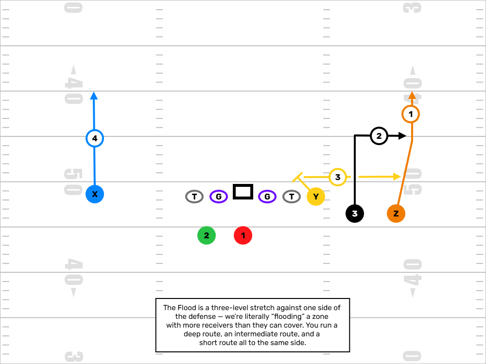
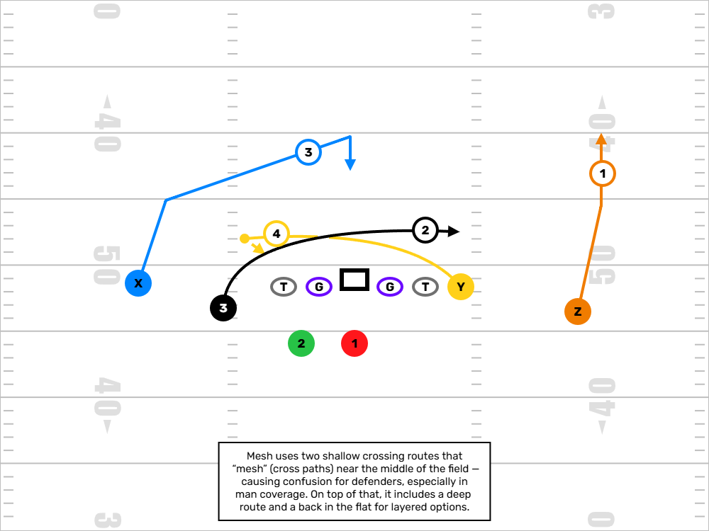
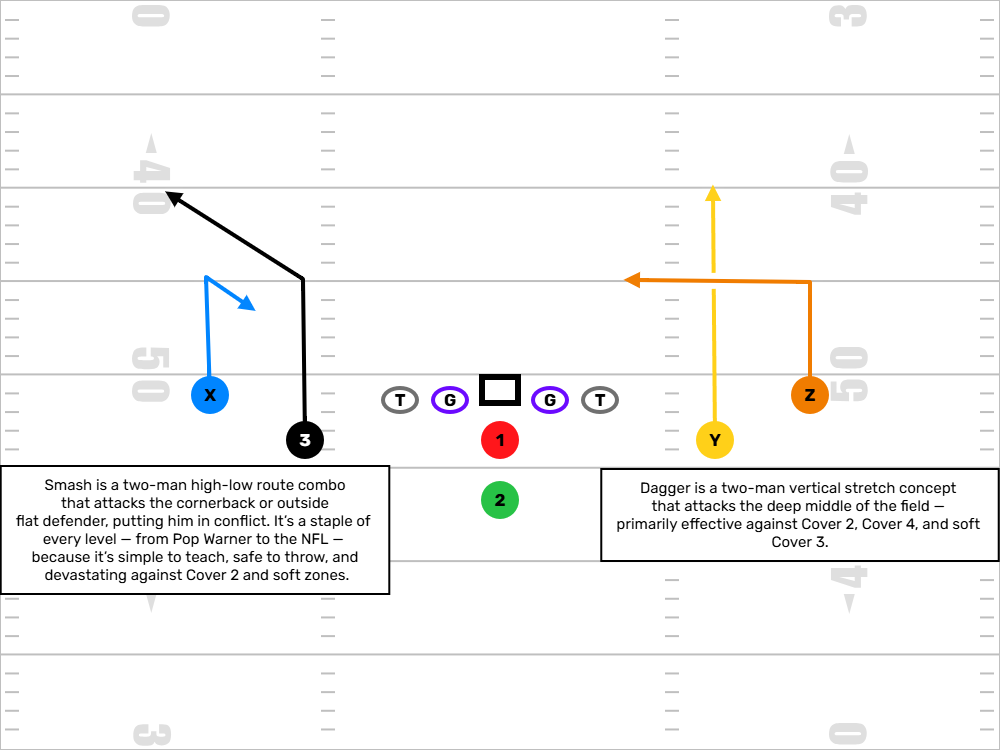
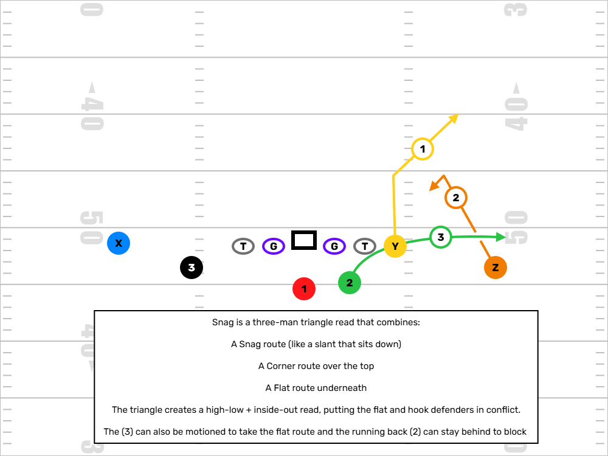
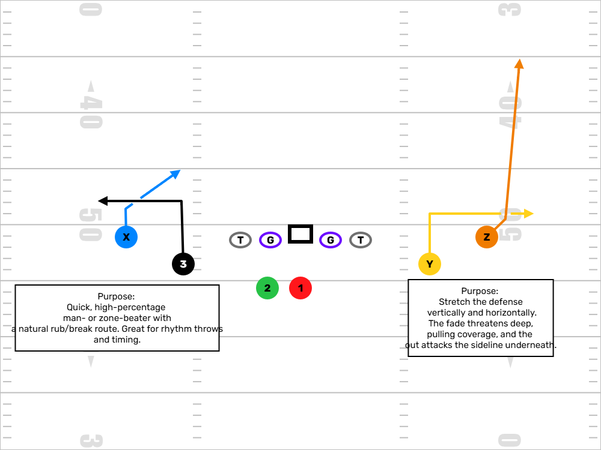
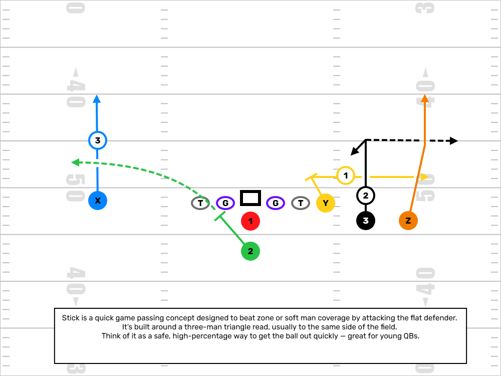

Passing Concepts
This page covers essential passing concepts for youth football, with simplified teaching points, route combinations, and visual examples. These are schemes used at all levels of football, broken down in a way that's accessible to young players and helpful for coaches looking to install efficient, proven concepts.
Flood
A high-low stretch of one side of the field, ideal for bootlegs or rollout plays. Puts three receivers at different depths to overload zone coverage.
- Outside WR: Go or post
- Slot/TE: 10–12 yard out or corner
- RB: Flat route
QB Read: High (deep), then out, then flat — depending on coverage depth.
Mesh
Designed to create natural rubs and confusion for defenders. Great against man or zone. Two receivers cross underneath while others stretch vertically.
- WRs: Cross shallow from opposite sides (5-yard depth)
- TE/Slot: Corner or sit
- RB: Swing or checkdown
Coaching Tip: Keep shallow crosses tight but avoid contact. Teach timing and space awareness.
Smash & Dagger
These are two separate concepts often paired with similar route elements.
Smash
- Outside WR: Hitch or curl (5–7 yards)
- Slot WR: Corner route over the top
Goal: Stress the flat defender — if he jumps the hitch, throw the corner.
Dagger
- Inside WR: Vertical route (clears safeties)
- Outside WR: Deep dig (10–15 yards across middle)
Goal: Create a deep void in the middle once the safety clears.
Snag
A triangle read that works great against both man and zone coverage. Easy to teach and highly effective in the red zone.
- Outside WR: Corner
- Slot WR: Snag route (inside sit or quick pivot)
- RB: Flat
Read: Inside-out — look snag, then corner, then flat.
2527
A number-based play call — common in youth systems. Typically means a 25-yard post and a 7-yard out or corner route.
- WR1: Post (25 yards or adjusted depth)
- WR2: Corner or out (7 yards)
Note: This can vary based on your system — use whatever numbering rules you’ve defined for your players.
Stick
A foundational quick-game concept that gives the QB an easy triangle read. Great for beginner QBs.
- Outside WR: Go route (clear out)
- Slot WR/TE: Stick or out at 5 yards
- RB: Flat route
QB Read: Read the flat defender. If he widens, hit the stick. If he stays, throw the flat.
Final Thoughts
Start with two or three of these concepts and build from there. Repetition and clear teaching are more important than variety. Use wristband play calls, hand signals, or diagrams to help young QBs and receivers visualize their assignments and make decisions quickly.